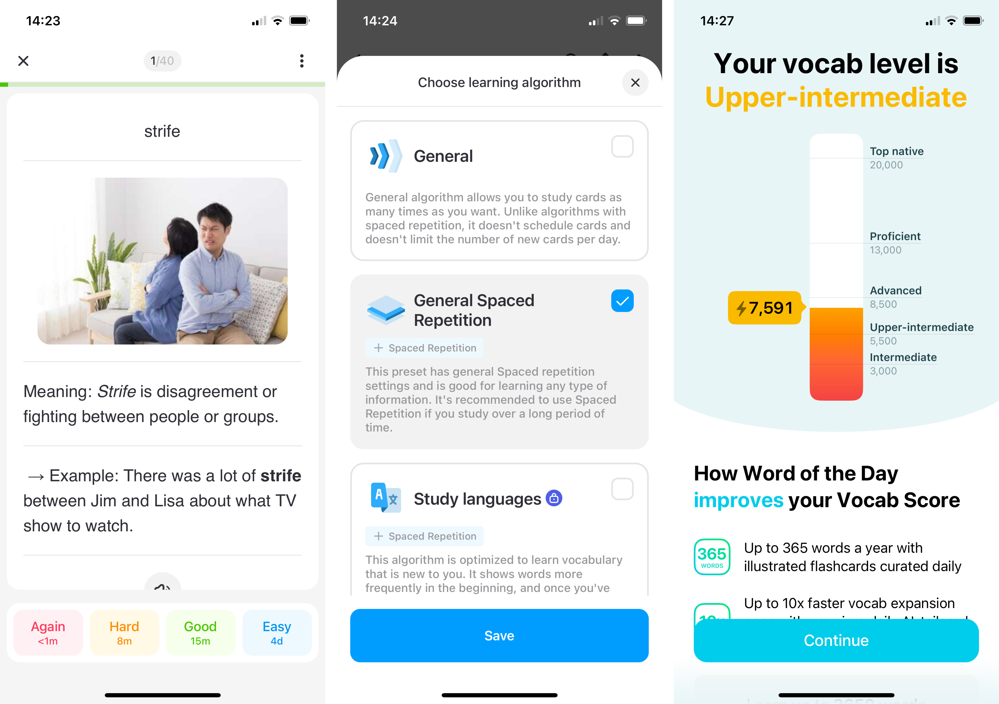
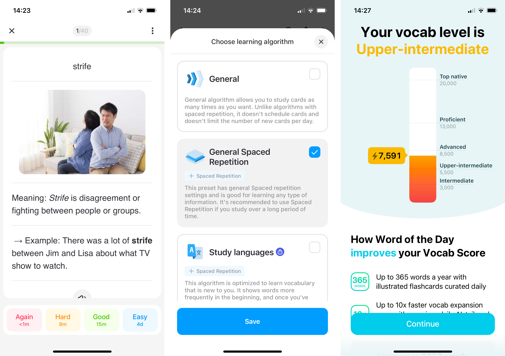

How I designed mobile app from scratch
Problem and idea
- I am advanced english speaker. BUT I want to achieve native’s level
- Need to grow my vocabulary
- english word <-> translation. WRONG WAY
- english word <-> definition. RIGHT WAY
- Need a tool to effortlessly save and practice relevant to me words
Competitors
| Logo | Name | Can save definition | Can practice | Revenue model | # of users |
|---|---|---|---|---|---|
 |
Atlas | Yes | Yes | Subscription | TBD |
| Oxford dictionary | Yes | No | Subscription | TBD | |
| Cambridge Dictionary +Plus | Yes | No | Subscription | TBD | |
 |
Fluent Forever | Yes | No | Subscription | TBD |
 |
Word Up | Yes | No | Subscription | TBD |
 |
Word of the Day | Yes | No | Subscription | TBD |
 |
LinQ | Yes | No | Subscription | TBD |
| Lingvist | Yes | No | Subscription | TBD | |
 |
GRE Vocabulary Flashcards | Yes | No | Subscription | TBD |
 |
ELSA Speak | Yes | No | Subscription | TBD |
 |
Lockcard | Yes | No | Subscription | TBD |
Business model
TBD
Desing process
JTBD and sections
I found the Job Stories framework the most exhaustive way to frame my ideation process. It allows me to start with a problem rather than solution.
Saving new word
1.
When I have a word which meaning I don’t know,
I want to know what it means,
So I can choose the most relevant ones and save it for later
1.1.
When I have a word which meaning I don’t know,
I want to read through available meanings,
So I can choose the most relevant ones and save it for later
1.2.
When I have a word which meaning I don’t know and I have the source,
I want to know the most relevant definition (if the word have multiple definitions),
So I can choose save the word for later and don’t spend time choosing the right definition
2.
When I have a word to add and it appeared that I already saved it,
I want to see that if I already saved it,
So I can don’t create any duplicates
3.
When I have a word to add and it has multiple meanings,
I want to be able to save several of them in on go,
So I can don’t waste time saving them one by one
4.
When I have a word to add and its definition has an unknown words as well,
I want to get the definition of these words without leaving the initial word not saved,
So I can don’t loose any words
5.
When I have a word which meaning I don’t know but there is no such word in the dictionary,
I want to see the closest words and be able to save one of the suggested options,
So I can still learn it
Accessing saved words
1.
When I need to revise the word I added recently,
I want to search for it or manually find it,
So I can can check the meaning
2.
When I revising the word I already added,
I want to be able to check its other meanings and origins,
So I can make sure I got a sense of a range of meanings
2.1.
When I revising the word I already added,
I want check meanings of other words in definitions,
So I can can save them to my dictionary
3.
When I have a fuzzy question,
I want to ask the app in natural language,
So I can get the response to my question
3.1.
When I have a fuzzy question,
I want to find the right word to use,
So I can get a word based on definition
Practicing your words
1.
When I in the mood for practicing words,
I want to start my practice session in one click within an app,
So I can don’t skip or avoid learning new words
2.
When I started practice session,
I want to see the part of the speech,
So I can have a better understand of the meaning I have to recollect
2.1.
When I practice the definitions,
I want to type the definition in my own words,
So I can practice active learning
3.
When I finished my practice session,
I want to stay motivated,
So I can know if I expanding my vocabulary
4.
When I practice the definitions,
I want to see the example of the word used,
So I can better understand its meaning
4.1.
When I practice the definitions,
I want to get more examples of how the word used,
So I can better understand its meaning
4.2.
When I practice the definitions,
I want to know pronunciation,
So I can I know how to say the word
Sketches and low fidelity wireframes
I started with exploring the structure of modern printed dictionaries


Researched other apps


 

Did sketches


Started with low-fidelity mockups

And experimented with forms
Colour palette
Primary. The core of each dictionary are words and their background. Black and white. I wanted to stick with classics.
Secondary. Red often used to for accents e.g. in old books. Green is a complementary colour.
Tertiary. I needed a bunch of different colours to distinguish 8 parts of speech.

I combined colours to make sure they work on each other

Typography
TBD
Result: high fidelity wireframes
Saving new words
Accessing saved words
Working with saved words
Searching for saved words
Practicing your words

Next steps/backlog
- teacher’s side of interface
- profile
- subscription page
- onboarding
- web version
- more user interviews
- find engineering buddy or learn Swift myself